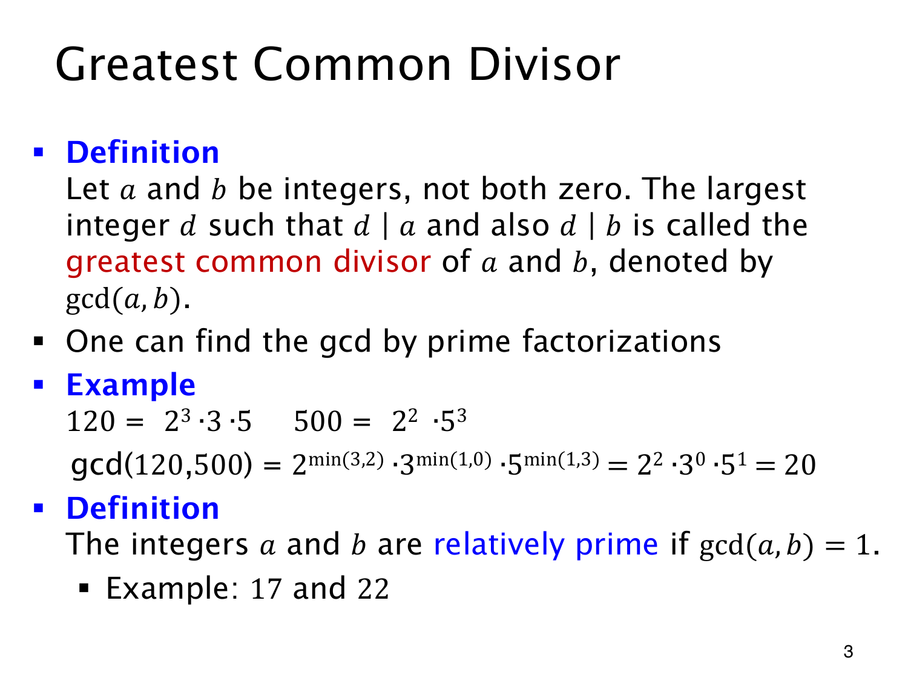

L1.13 · 第 3 页讲解原文
查看这一页课件

最大公约数取共同素因子的较小次数
对不同时为零的整数 a,b，能同时整除两者的最大整数，称为 greatest common divisor，记作 gcd(a,b)。
用素因子分解计算时，每个素数的指数取两边较小的那个，因为公约数不能比任何一方含有更多次这个素因子。例如
120=23⋅3⋅5,500=22⋅53,
于是
gcd(120,500)=2min(3,2)3min(1,0)5min(1,3)=20.
500 中没有因子 3，指数记作零，所以公约数也不含它。
若 gcd(a,b)=1，称两数 relatively prime（互素）。这不要求两数各自为素数：合数 8,9 也互素；17,22 互素，则因为 22=2⋅11 与 17 没有共同素因子。
最大公约数总取正值，负号不改变正公约数，且 a=0 时 gcd(a,0)=∣a∣。唯独 (0,0) 被定义排除，因为任何正整数都整除零，无法取到最大的一个。